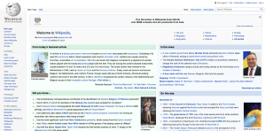

| Given I Launch the Application "${app.url}" |
7.76s |
| When Verify the githubs second repository in github screen |
1.81s |
| And Verify the "libdc-for-dirk" repository name in Github screen |
3.61s |
| And Verify the "132" Numberofstars in Github screen |
3.51s |
java.lang.AssertionError: expected [132] but found [131]
at org.testng.Assert.fail(Assert.java:94)
at org.testng.Assert.failNotEquals(Assert.java:513)
at org.testng.Assert.assertEqualsImpl(Assert.java:135)
at org.testng.Assert.assertEquals(Assert.java:116)
at org.testng.Assert.assertEquals(Assert.java:190)
at org.testng.Assert.assertEquals(Assert.java:200)
at com.onepulse.app.stepdefinitions.mobilesteps.ContactUs.verify_the_Numberofstars_in_Github_screen(ContactUs.java:580)
at ✽.And Verify the "132" Numberofstars in Github screen(features/WebApplicatioN_Feature/login.feature:150)
|
| And Verify Number of Branch in one Repository |
0.00s |
| And Verify Release coount in one Repository |
0.00s |
|  |